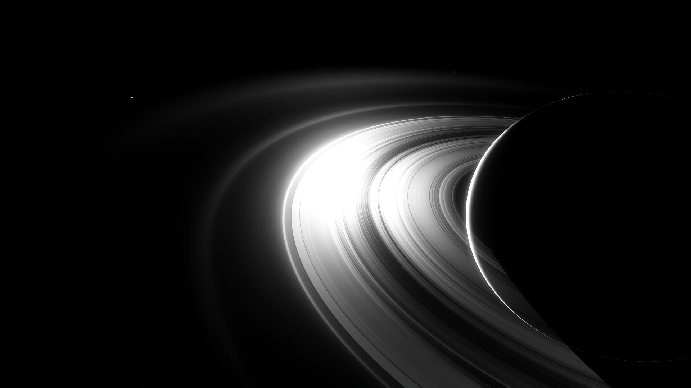
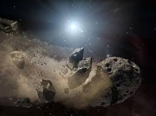

Flying around Saturn
As you fly around Saturn, you feel like you've made the correct choice to not land. You search around to see if you can find a crystal when suddenly a glistening on the rings catch your attention. You get nervous since you have no idea what it could be, maybe going back to the asteroids would lead me on a better path? No way to know


Which way do you think will lead you in the right path?